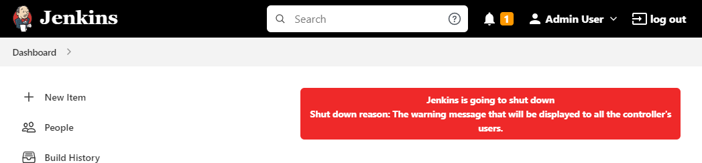

Most standard administrative tasks can be performed from the screens in the Manage Jenkins section of the dashboard. In this chapter, we look at these screens and explain how to use them.
The tiles displayed on the Manage Jenkins page are grouped logically. Here we discuss the pages that are part of the standard installation. Plugins may add pages to this screen.
The top of the Manage Jenkins screen may contain "Monitors" that alert you when a new version of the Jenkins software or a security update is available. Each monitor includes a description of the issue it is reporting and links to additional information about the issue
Inline help is available on most Manage Jenkins pages:
To access the help, select the ? icon to the right of each field.
Click the ? icon again to hide the help text.
|
The Manage Jenkins screens were modernized in 2020 to provide a more attractive user interface for all users and a much better experience for users on narrow devices such as tablets and phones. The main changes made were:
For more information about these and other changes that have been implemented, see: |
Other system administration topics are discussed in Jenkins System Administration.
Screens for configuring resources for your Jenkins instance.
Configure global settings and paths for the Jenkins instance
Configure tools, their locations, and automatic installers
Add, update, remove, disable/enable plugins that extend the functionality of Jenkins.
Add, remove, control, and monitor the nodes used for the agents on which build jobs run.
Configure your Jenkins instance using a human-readable YAML file rather than the UI. This is an optional feature that appears in this group only when the plugin is installed on your controller.
Screens for configuring security features for your Jenkins instance. See Securing Jenkins for general information about managing Jenkins security.
Set configuration parameters that secure your Jenkins instance.
Configure the credentials that provide secure access to third-party sites and applications that interact with Jenkins.
Configure credential providers and types
Manage users defined in the Jenkins user database. This is not used if you use a different security realm such as LDAP or AD.
Displays information about the Jenkins environment.
Jenkins log that contains all java.uil.logging output related to Jenkins.
Displays information about resource utilization on you Jenkins instance.
Provides version and license information for your Jenkins instance.
Remove configuration information related to plugins that have been removed from the instance.
Screens for common management tasks and management tools that enable you to do administrative tasks without using the UI.
Discard all data that is loaded in memory and reload everything from the file system. This is useful when you modify configuration files directly on disk.
How to use the Jenkins CLI from a shell or script.
Execute an Apache Groovy script for administration, troubleshooting, and diagnostics.
Prevents new builds from starting so that the system can be shut down safely. Displays a red banner with a custom message so that users know what is about to happen.

This does not ask Jenkins to stop; this action will just prevent new builds from starting.
If you need to stop or restart Jenkins, you should use the command line or the /restart and /safeRestart end points.
There is also a plugin called Safe Restart that will add a Restart Safely link in the UI.
|
Please submit your feedback about this page through this quick form.
Alternatively, if you don't wish to complete the quick form, you can simply indicate if you found this page helpful?
See existing feedback here.